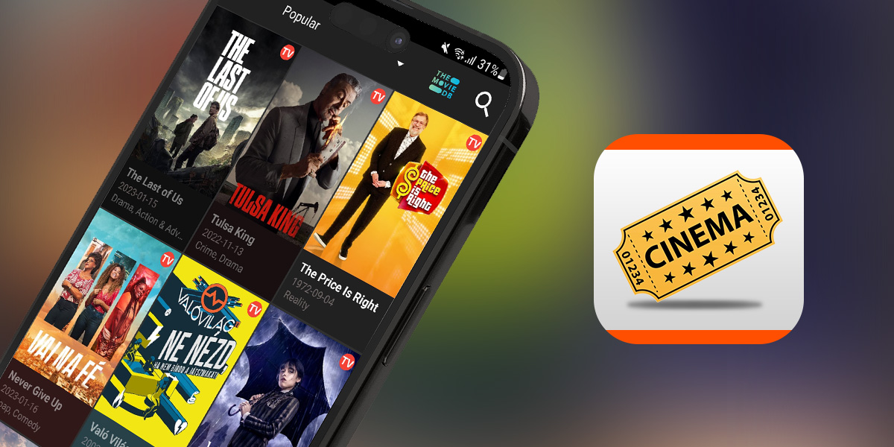
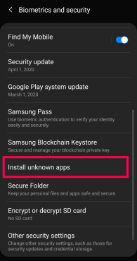
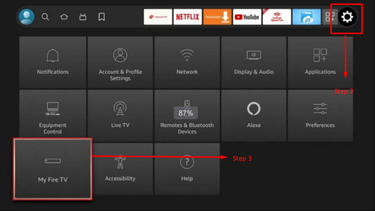
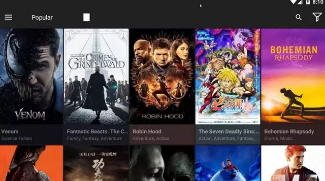

Cinema HD App: The A to Z guide for interested users
Have you been looking for a free site to watch movies and the CinemaHD App has caught your eye? In this blog, we will give you a more detailed look into the app, how to download it, and what site can be its best alternative.

What is Cinema HD App?
It is a mobile application that allows users to watch movies and TV shows on their mobile devices. It is not available on official app stores and must be downloaded from third-party sources.
CinemaHD App uses web scraping technology to search the Internet for available links to movies and TV shows and provides them to users for free. The app offers a user-friendly interface with various features such as the ability to download content, adjust video quality, and access multiple subtitles.
However, it is important to note that the legality of using Cinema HD may vary by location, and you should be aware of any copyright laws and regulations in your area.
What are the features of CinemaHD App?
It offers several notable features that enhance the streaming experience for its users. Some of the key features of Cinema HD include:
-
Extensive Content Library: CinemaHD offers a vast collection of movies and TV shows from various genres, including the latest releases and popular titles.
-
High-Quality Streaming: The app supports high-definition streaming, allowing users to enjoy their favorite content in excellent picture quality.
-
User-Friendly Interface: Cinema HD boasts a user-friendly interface that makes it easy to navigate, search for content, and browse through different categories.
-
Multiple Streaming Sources: The app aggregates content from multiple streaming platforms, providing users with a wide selection of available links for each title.
-
Download and Offline Viewing: CinemaHD allows users to download movies and TV episodes for offline viewing, enabling them to enjoy content without an internet connection.
-
Subtitles and Multi-Language Support: The app supports subtitles in various languages, enhancing accessibility and catering to a global audience.
-
Trakt Integration: Cinema HD integrates with Trakt, a popular platform for tracking and syncing movie and TV show progress. This feature enables users to keep track of watched content, create watchlists, and sync progress across multiple devices.
These features contribute to the popularity of CinemaHD among streaming enthusiasts. However, it's important to be aware of the legal implications and copyright restrictions associated with streaming copyrighted content.
Is Cinema HD safe?
CinemaHD App, as a third-party streaming application, may pose certain safety considerations. The safety of the content depends on its original sources, which can vary in terms of copyright compliance.
It is important to be cautious and use legal streaming platforms to ensure adherence to copyright laws. When using Cinema HD, it is recommended to download the app from a trusted source to minimize the risk of malware or security threats.
Additionally, considering the use of a reputable Virtual Private Network (VPN) can enhance online privacy and security.
Lastly, be mindful of advertisements within the app, as they may contain potentially unsafe content.
Is Cinema HD legal?
CinemaHD operates in a legal gray area as it provides links to copyrighted content from various sources. Streaming copyrighted content without proper authorization may be considered a violation of copyright laws.
It is advisable to use legal streaming platforms that have obtained the necessary rights and licenses for content distribution to ensure compliance with copyright laws and avoid potential legal issues.
How to download CinemaHD App on all devices
How to install Cinema HD on Android phone
To download CinemaHD, you need to follow these steps:
-
Step 1: On your mobile device, go to the settings and allow installation of apps from unknown sources.

-
Step 2: Open a web browser and search for the latest version of Cinema HD APK file.
-
Step 3: Once the download is complete, locate the APK file in your device's Downloads folder.
-
Step 4: Tap on the APK file to start installing.
-
Step 5: Follow the instructions to complete.
Once the installation is complete, you can open the app and start using it to watch movies and TV shows on your mobile device. It is important to note that downloading apps from third-party sources can be risky, and you should always make sure to download from a trusted source to avoid downloading malware or other malicious software onto your device.
How to download Cinema HD on Iphone/Ipad
Unfortunately, CinemaHD App is not available for iOS devices like iPhones and iPads. The app is only available for Android devices and Amazon FireStick.
However, there are several alternative apps available on the App Store that offer similar features to Cinema HD.
How to install Cinema HD on Roku TV
CinemaHD is an Android app, and Roku is not an Android-based device. So it's not possible to install the Cinema HD app directly on a Roku TV.
However, you can use screen mirroring to display the content from your Android device on your Roku TV. Here are the steps to do so:
-
Step 1: Turn on your Roku TV and make sure it's connected to the same Wi-Fi network as your Android device.
-
Step 2: On your Android device, go to the Settings menu and select the "Connected devices" or "Cast" option.
-
Step 3: Select "Cast screen" or "Wireless display" option.
-
Step 4: Your Android device will scan for nearby devices. Select your Roku TV from the list.
-
Step 5: Once connected, you can launch the CinemaHD App on your Android device and start playing the content you want to watch.
-
Step 6: The content will be mirrored on your Roku TV.
Note that screen mirroring may not work smoothly on all devices, and the video quality may be affected. Also, the sound may not play through the TV, so you may need to connect external speakers for better audio.
How to download Cinema HD on FireStick
To get CinemaHD on FireStick, you can follow the steps below:
-
Step 1: Turn on your FireStick device and go to the home screen.
-
Step 2: Select "Settings" from the menu at the top of the screen.
-
Step 3: Choose "My Fire TV" or "Device" (based on your FireStick version).

-
Step 4: Open "Developer options."
-
Step 5: Enable "Apps from Unknown Sources."
-
Step 6: Return to the home screen and choose the search icon.
-
Step 7: Type "Downloader" into the search bar and select it from the search results.
-
Step 8: Install the "Downloader" app on your FireStick device.
-
Step 9: Open the "Downloader" app and select the URL field.
-
Step 10: Enter the following URL cinemahdapkapp.com/cinema-hd-apk to download CinemaHD App File.
-
Step 11: Click on "Go" and wait for the APK file to download.
-
Step 12: Once the download is complete, click on "Install" to install the Cinema HD app on your FireStick device.
-
Step 13: Wait for the installation process to complete, and then click "Open" to launch the app.
After following these steps, you should be able to use CinemaHD on your FireStick device to watch movies and TV shows.
It is important to note that downloading apps from third-party sources can be risky, and you should always make sure to download from a trusted source to avoid downloading malware or other malicious software onto your device.
How to install Cinema HD on Android TV
To download CinemaHD App on an Android TV, you can follow these steps:
-
Step 1 - Enable Unknown Sources: Go to the "Settings" menu on your Android TV, navigate to "Security & restrictions" (or similar), and enable the option to allow installations from unknown sources. This will allow you to install apps from outside the Google Play Store.
-
Step 2 - Download the APK: Using a web browser on your Android TV, visit a trusted source to download the Cinema HD APK file. Make sure to download it from a reputable website.
-
Step 3 - Install the APK: Once the APK file is downloaded, locate it in the file manager or notification panel and click on it to start the installation process. Follow the on-screen prompts to install the app.
-
Step 4 - Launch CinemaHD: After the installation is complete, you should see the Cinema HD app icon on your Android TV home screen or in the app drawer. Simply click on the icon to launch the app.
-
Step 5 - Grant Necessary Permissions: Upon first launch, CinemaHD may request certain permissions, such as access to storage or media files. Grant the required permissions to allow the app to function properly.
-
Step 6 - Enjoy Streaming: With Cinema HD successfully installed, you can now explore the app's content library, search for movies or TV shows, and start streaming your favorite content on your Android TV.
It's important to note that the steps may vary slightly depending on the specific Android TV model or software version you are using. Additionally, always ensure that you download the APK from a trusted source to avoid any security risks or malware.

How to download movies on CinemaHD App
It does not have a built-in download feature. It is primarily designed for streaming movies and TV shows online. However, you can use third-party downloaders or screen recording apps to save content from CinemaHD onto your device. Here's a general process:
Step 1 - Install a Downloading App: Search for and install a reliable downloading app from the Google Play Store, such as ADM (Advanced Download Manager) or Download Manager for Android.
Step 2 - Open Cinema HD: Launch CinemaHD and browse through the available movies or TV shows.
Step 3 - Find Content to Download: Select the movie or TV show you want to download from Cinema HD.
Step 4 - Copy the Streaming Link: Once you have chosen the content, long-press on the streaming link provided by CinemaHD App and select the option to copy the link address.
Step 5 - Open Downloading App: Open the downloading app you installed earlier.
Step 6 - Add Download Link: In the downloading app, find the option to add a new download or paste a link. Paste the streaming link you copied from Cinema HD into the appropriate field.
Step 7 - Start Download: Configure any desired settings in the downloading app, such as selecting the download location or video quality, and then start the download process.
Step 8 - Wait for Download: The downloading app will handle the download process. Wait for it to complete, and the movie or TV show will be saved on your device.
Please note that downloading copyrighted content may infringe on copyright laws, so ensure that you have the necessary rights or permissions to download and store the content.
Always respect intellectual property rights and adhere to legal streaming options available in your region.
Why is Cinema HD not working?
There can be several reasons why CinemaHD App is not working on your device. Here are some common issues as well as their possible solutions:
App not loading or crashing: If Cinema HD is not opening or keeps crashing, try clearing the app's cache and data. To do this, go to your device's Settings menu, select "Apps & notifications", find the app CinemaHD, and then select "Storage". From there, select "Clear cache" and "Clear data". Then, try reopening it.
No sources available: If you are getting a "No sources available" error, it could be because the movie or TV show you are trying to watch is not available. You can try searching for a different title or wait for the content to become available.
Buffering or low-quality video: If the video is buffering or the quality is poor, it could be due to slow internet speed or high traffic on the server. You can try restarting your device or connecting to a different network to improve the connection.
Outdated app version: If you are using an outdated version of Cinema HD, it may not work properly. Try updating the app to the latest version from a trusted source, such as the official website or app store.
Device compatibility issues: CinemaHD is designed to work on Android devices, and it may not be compatible with all devices. If you are using a device that is not supported, the app may not work at all or have limited functionality.
If none of these solutions work, you can try uninstalling and reinstalling the app or contacting the app developer for further support.
What is the best Cinema HD alternative?
There are many alternatives to CinemaHD App that offer similar features and content. But why settle for less when you can get a better site? Whatever you can find on Cinema HD can be found on OnStream, in higher definition and less hassle.
Check out OnStream's features if words are not enough to convince you:
Free of charge: OnStream is totally free without any hidden fees or ads of any kind.
No signup or registration required: OnStream allows you to even stream without an account.
Multi-subtitles: Choose the language for your utmost convenience.
Multiple server options: Various well-selected from other sites/services, apart from a Torrent server.
Offline watching: Download your movies and shows to watch anytime, anywhere, with or without the Internet.
Custom favorite list: Keep track of movies and shows you love to rewatch or share it with people you care about later.
Latest daily updates: OnStream is among the fastest to update new content.
We hope with this blog, you will be able to make informed decisions about the service that suits your needs better. CinemaHD App is a great choice when it comes to online movie and TV show streaming.
However, if you are looking for better features that are on the same par as those of premium services, go for OnStream instead.